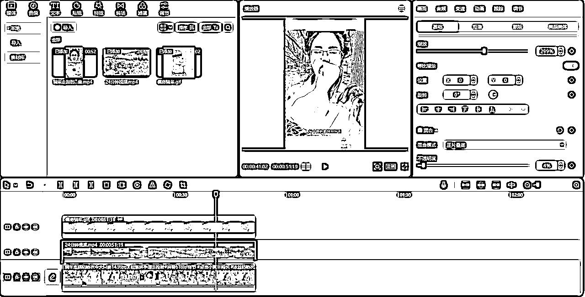

来源：https://nyxaxmtuk5.feishu.cn/docx/UFahdSZTyoWG0Fx0JupcAmBqncd
生财的圈友们，大家好！我是小灰灰，一位入圈4年的老圈友，大多数人应该都不认识我，毕竟之前也确实没有什么干货可以给大家分享，所以大多时候都在潜水。在这次6月续航中，我参加了小红书店铺的航海，很荣幸能够登上个人变现榜，并获得第二名的好成绩。在这次航海中，我一个人，3个号，一个月时间达成了56W的GMV，净利润在25W左右。生财卧虎藏龙，大佬数不胜数，我这个成绩在大佬面前不值一提，但好在也算拿到了正反馈。我知道还有很多跟我之前的状态一样没有跑通闭环，没有拿到正反馈的圈友。希望我的分享能给你带来一点点启发，也感谢你的阅读！
我今年依次报过盗坤老师、Erik老师、佩佩老师的小红书训练营，还有就是咱们生财的航海和续航。每个老师讲的侧重点都不一样，但是都让我学到新知识，帮我一点一点地熟悉这个平台，让我在做这个项目的过程中不断总结经验，修正方向。
4月底我决定把所有精力全部放在小红书电商上，一开始是做的实拍，当时选的是饰品赛道，正好认识的一个朋友有这方面的货源，就通过这个朋友介绍拿了些样品回来实拍，拿了3个号全发这个类目，图文笔记跟视频笔记都试过了，但是都没有起色。因为本身饰品这个东西就比较难拍出效果，然后我自己拍照跟P图都是半吊子水平，完了还得自己上架做详情页、产品描述，都是我自己一个人做，就特别头大。就这样吭哧吭哧搞了快一个月，一篇爆的笔记都没有，我心想这样不行呀，自己对饰品这块也不是很懂，也不知道拿的这些样品到底符不符合小红书人群的审美，如果这些品本来就不属于会爆的品，那我发再多笔记也没用，更何况我发的笔记质量还不高，就更不可能爆了。
然后我就调整了策略，正好看到盗坤老师发的一篇文章说，前期别想这么多，直接搬运就行，先把量搞上来。Erik老师建议是一个号一个类目，多搞几个类目。然后从5月底我就着手上新的类目，用了个以前发过一条笔记的老号，开始发手机壳(当时觉得客单价低比较容易出单)，发了3天让茶茶老师帮忙诊断一下号，她说手机壳比较卷，建议换类目。听人劝，吃饱饭。我果断换了一个类目，按照老师说的先找爆品再发笔记的顺序去跟爆品。
换类目之后选的第一个品连续了发5天视频都没有爆，然后就开始测第二个品，没想到第二个品发到第3天，就有个视频开始跑量了，这个视频第一天6000小眼睛都没有出单，我以为这视频不行，没想到第二天接着跑，到2W小眼睛出了4单200多GMV，给我激动的，心想总算破蛋了，但是转化实在太差了，第三天才出2单，那天晚上还吃了个违规，提示挂的商品跟视频里面的不一样，视频里面没做展示。那天白天已经有另一个视频出同样的违规了，因为那个视频没啥播放量，我申诉了一下没过就隐藏掉了。结果晚上又来这个违规，而且违规的还是这个爆的视频，我心想，这个要是申诉不通过就完了，好不容易出个爆款。当时上产品的时候也没注意，挂的商品都视频里面的差不多，但又不完全一样，导致出现这样的违规。我灵机一动就想了个法子，我就给产品链接加了2个跟视频里面一模一样的SKU，库存改为1，想着申诉通过之后再改为0，因为那2个品卖起来更麻烦，我不想卖那个。改好之后再去申诉，没想到还真被我申诉成功了，然后视频就开始狂飙了。因为前2天转化率比较低，商品转化率只有5%，我就想着要不改下价格试试，用插件搬商品的时候设置售卖价和市场价，我以为会像以前的淘宝那样市场价就是划线价，结果小红书这边售卖价就是售卖价，市场价不体现出来。加个促销价，售卖价才变成划线价。一开始卖39.9，加个促销价卖36.9，优惠3块钱，我想这样不行就把卖价改成49.9，到手价不变，诶，这样一改商品转化率立马变高了，一开始甚至能到10%，最后稳定在8%左右，13号那天跑了39W的播放，GMV1.4万，这就是第一次爆单。
13号半夜我又想再改一下价格试试，看看转化率还会不会变高，就把售卖价改成54.9，到手价不变，结果转化率又立马掉到5%，我一看不行，还是改回来吧，就这样跑了2个多小时，半夜2点连忙改回49.9了。通过这个实操，可以看出，小红书人群对价格还是挺敏感的，就几块钱的变动，转化率能这么快产生相应的变动。我那个定价也是参考了同行卖的最好的那个链接的定价，比他低1块钱，然后划线价是真的挺重要的，虽然到手价没变，但是划线价也是影响转化的重要因素。促销价、优惠券这些工具要利用好，要给用户占到便宜的感觉。
在这个品爆了差不多一周后，接着第一个品又有视频开始爆了，那段时间就这2个品的视频猛怼，一天发10几条笔记，持续大爆了一个多星期，每天3、4W的GMV，端午那天本来跟女朋友约好出去玩的，结果一整天都在回客户信息，有个品SKU又设置错了导致客户下的单有问题，然后电脑又正好坏掉了，就搞得焦头烂额。刚开始经历这种场面，没啥经验，客服设置成忙碌模式又怕影响店铺，所以那段时间客服24小时在线，基本就是晚上12点多才睡，早上4、5点的时候又被客户的信息吵醒，持续了半个多月比较缺觉的状态。最高的一天是6月27号，7.7W GMV，当时我也在续航的日志里面记录了下来。
在这个爆的过程中也是出现了一些问题，以后大家也可以提前规避一下。第一个就是库存，我当时上架的时候库存设置是1000，结果端午那天卖的没库存了，当时我正跟我女朋友在外面吃晚饭呢，一个客户找过来说有个SKU拍不了，我一看原来是没库存了，而且已经没了有半个小时了，按当时的出单密度，漏了有10来单。所以以后大家上架产品直接把库存往高了设置，我现在都是设置成10000，这样就不太会出现卖的没库存的情况了。第二个就是开了运费险的话爆单的时候店铺余额记得要多充点，我一开始就是100、200的充，结果那几天爆单店铺余额全扣完了，就有好多客户的订单没买上运费险，导致后面有退货的就比较麻烦。客户支付宝微信付的货款又不能抵扣运费险的，只能另外充。所以还是一次充多一点比较不容易出岔子。
到现在为止我还是觉得自己运气比较好，在这一个月里面连续碰到2个爆品，1个月卖了1.4W单。但是这两个品还是有一些共性在的，那就是确实是解决了一部分人的刚需。就像肖肖前几天分享里面写到的大佬总结的选品推荐：应季性、痛点型、新奇特。变美是女人的刚需，补肾壮阳是男人的刚需，健康长寿是老人的刚需，变聪明是小孩子的刚需。还有就是利用人性的弱点，喜欢什么，害怕什么。围绕这些要素去选品，当你的品哪怕能满足其中一个点，也可能会卖爆。
一开始的时候我每个账号每天只发1-3篇笔记，当时一方面是听说发太多笔记可能会不给流量，更多的还是执行力不够。后面听一个群友说每天最少5篇笔记才行，我立马把笔记数量跟上来，后面基本上每天每个账号7-13篇笔记不等。就这样，基数提升了之后，出爆款的概率也自然跟着提升，在发了大量的笔记之后就碰到了那么几个大爆的视频，才有了现在这个成绩，如果不把数量堆上来，那很难出爆款。
在做这个小红书店铺项目之前，我跟着盗坤老师学了淘宝蓝海、抖音短视频混剪、抖音蓝海直播，跟着木易老师学了视频号无人直播、视频号半无人直播，跟着Erik老师学了抖音、视频号半无人直播、真人出镜直播，还跟着佩佩老师学过抖音短视频带货，还报名过咱们生财的航海。虽然前面报的那些训练营没有做出大的成绩，但是学费并没有白交，每个训练营都有学到东西，而且我这次做小红书店铺过程中所运用到的知识、技能，有好多就是在前面那些训练营当中学会的。如果没有前面那些积累，也就不可能迎来今天的爆发。而我做成这一个项目，就把之前所有的学费都赚回来了。人生没有白走的路，每一步都算数！
我主要做的是短视频搬运，相对来说操作起来比较简单，对新手比较友好，能保证笔记数量，而且咱们搬的都是在别的平台有不少销量，已经被验证过的视频，可能比你自己剪的还更好，这样才更容易出结果，下面就给大家详细讲解一下实操步骤。
做短视频带货最重要的就是选品，只有选中一个好的品，才可能卖爆做出高GMV。
当你用前面的方法选出一个品之后，然后到考古加里面搜关键词，找到最近销量比较高的链接，把关联视频导出来，下面以【防晒衣】为例。
把里面的链接复制出来，再用抖音采集工具把销量高的视频批量下载下来，然后再用CR Video Mate批量处理一下。
处理完如果有水印的话再用剪映简单处理，裁剪、加画中画、加锐化、调参数、加动态贴纸，基本就是那些去重手段，也没有啥特别的，大家可以视情况决定要不要再用剪映处理，还是说CR处理完没水印的话直接就发，这些都是可以灵活变通的，主要目的就是做去重规避系统稽查。一般这些动作全做一遍后基本上不会提示非原创违规，除非是那种被搬烂了的素材。

前面批量制作好大量视频之后就开始发小红书测了，在测品的时候尽量一个号一个类目，每天至少发5个视频，注意做好1机1卡1号，能用流量尽量用流量，如果要连WIFI的话，就固定某一个号联WIFI。
我是一个品连发5天，如果还没有出爆款视频，那这个品就过掉。一个号可以同时测2、3个品，具体看账号的笔记安排。一个品一天5个视频，同时测2个品那一天就发10个视频。同时3个号操作的话，如果都是各2个品，那一天就30个视频。具体的根据自己的精力和效率来调整。反正按上面的方法去选的品去测，发的视频数量越多，出爆品的概率越大。
有些品确实是有爆款属性的，但你的视频如果发的太少，可能你就碰不到那个爆的视频了，而且有些视频可能发了几天才爆，所以我一般都是发5天不爆才会过掉搞下一个品。
如果一个视频小眼睛比较高开始跑量，那我会用几个小号去刷下评论引导一下，比如：拍了，快发货或者问产品相关的问题等等之类的，人都是有从众心理，这些评论也可以很好的提高转化。
账号端的运营基本上就这些内容，至于店铺端的操作航海手册里面有详细的指导，大家有什么不懂的可以多看一下手册。每个项目的航海手册都写得非常详细，真是一个非常好的指导手册，值得多看几遍。
项目分享基本结束，接下来分享一下我这一路走下来的心路历程吧，希望能给还在迷茫中的圈友一些启发。其实我打心底认为，这是我人生中的第二次突破。为什么这么说呢？
我先讲讲我之前的经历，我是90年的，来自江西宜春的一个偏远农村，父母都是本本分分的农民，家里也没有啥经商的基因。大学上的是我们省内的一个大专，大三的时候想去部队锻炼一下，就参军入伍了。当了2年兵，13年年底退伍，14年就来到了杭州，第一份工作是电话销售，因为我从小就非常自卑内向，非常不善言辞，当时也是想改变一下自己，突破一下自己就选择了销售的工作。但是做了两年也没有很大的起色，做得并不好，中间还被人骗进过传销。感觉一直没找到门道，一直没开悟。2016年8月30号我订阅了李笑来老师的得到专栏《通往财富自由之路》，此时命运的齿轮开始转动。9月的时候又进入了一家新公司，这家公司是做黄金白银现货的，是电销+微信营销，一开始也是一直不出单，20天之后我想着这样下去不行呀，一个周末的晚上我就把我们组做得最好的人约出来吃夜宵，他也是我们整个公司大几百个销售里面做得最好的，跟他取经，学习一下经验，后面在我入职1个月的时候终于开单，惊险度过第一个考核期，有了感觉之后，后面越做越好，一度位列我们公司销售业绩前20%人员，这就是我的第一个突破过程。
在这个突破过程中，非常感谢李笑来老师，他的专栏我一篇不落，而且大部分的文章都非常认真地写了留言，也感谢那个同事传授给我经验让我在工作中得到成长。其次，当时认真阅读了《小狗钱钱》这本书，并且践行每天写成功日记，保持了阅读习惯，也读了很多本经典的个人成长类书籍，让我获益良多，也正是李笑来老师的专栏和阅读的那些书籍，让我的心态得到了转变，不再抱怨，总是乐观积极的面对生活。第三，坚持跑步。运动会让人感觉更有力量，尤其是在我心态转变之后，让我爱上了跑步这项运动，而在以前哪怕是在部队，我也是非常排斥跑步的。在这之后明显感觉自己变得乐观外向了，人也自信了很多，就像开悟了一样。然后从16年到21年都是在金融行业，16-17年做的现货，18-21年做的股票融资，都是电销，然后加微信，通过微信来成交客户。那几年行情还不错，加上20年自己出来做代理，稍微赚了点钱，就在杭州买了房。
时间来到了2022年，由于政策原因，之前的那个业务做不了了，再做的话可能就要进去了，风险太大我想还是转行吧，就开始往互联网方向转了。为什么我2019年9月就加了生财，到2021年整整2年多都没有认真做过一个里面的项目呢，还是因为懒，还有就是之前那个钱赚得太轻松了。之前那个业务确实是很多人的刚需，市场有这个需求，然后我又有积累，手上有一批老客户，20年出来自己做代理之后不需要拼命开发新客户，也比较稳定，每个月几万块钱拿着，危机意识不够强，赚习惯了轻松的快钱，就很难再耐住性子去赚那些需要费脑费精力的慢钱了。加上人又有惯性思维，不喜欢走出舒适区。所以20年虽然报名了盗坤老师的淘宝蓝海，但是也没认真去运营，单是出了，扣掉刷单、采购的成本，还是亏钱的。到了2022年，以前的业务彻底做不了了，就必须转型了，没有退路了就只能拼命做了。
去年年初先是报名了盗坤老师的抖音短视频、抖音无人直播，听说视频号无人直播是风口又转战视频号，半夜和凌晨的时候稽查比较松，流量也比较好，7月份那段时间就经常搞到半夜1点多，然后睡2个小时凌晨四点又起来播，甚至有几天搞通宵的。有几场小爆了一下，单场GMV有2万多。到8月份视频号严打无人直播，开播十几分钟就封号，玩不了了然后又转战抖音无人直播，然后还尝试了真人出镜播，半无人直播。发现自己真是不擅长直播，直播这个事也确实是比较难。然后今年正好小红书电商开放，门槛比较低，前期视频号直播做了没拿到结果我就想着还是全身心搞小红书吧，聚焦才更容易出结果。
就这样，做着做着从小红书航海开单到续航结束，一个月左右的时间做到了56W的GMV，到现在已经70几万GMV了，加入生财4年时间，总算做出了相对来说拿得出手的结果。也算是实实在在的跑通了闭环，做成了一个航海项目。所以我说这是我人生中的第二次突破。之前就有这个感觉，16年的时候是第一次开悟的过程，突破了自己，然后这么多年来感觉又遇到了卡点。这次踏踏实实地做成了一个项目，算是第二次突破了自己，人总是在一次又一次的突破中成长。之前听涛哥还是谁说的来着：我这一生从未失败，要么赚到钱，要么学到经验。说的太好了，所以那些还没拿到结果的圈友也不要气馁，李笑来老师说过，比成功更重要的事是成长。只要不断成长，不断积累，成功是早晚的事。相信所有人在一次次默默蛰伏后都会迎来爆发！共勉！
这就是我今天的全部分享，最后特别感谢@盗坤，@木易，@Erik，@茶茶，@佩佩，@亦仁等等好多好多人，每个人都以不同形式帮助过我，教给我知识，给过我力量，也感谢@郭晓文在我写这篇帖子过程中的指导，感恩！等我下次再有干货的时候，再给大家分享，感谢大家的阅读！祝圈友们生财有术，早日暴富！